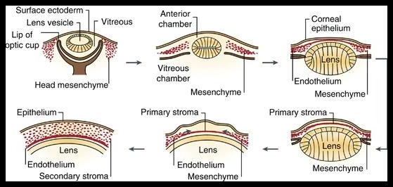
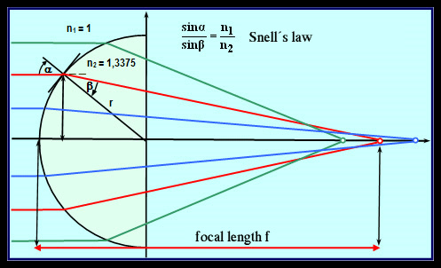
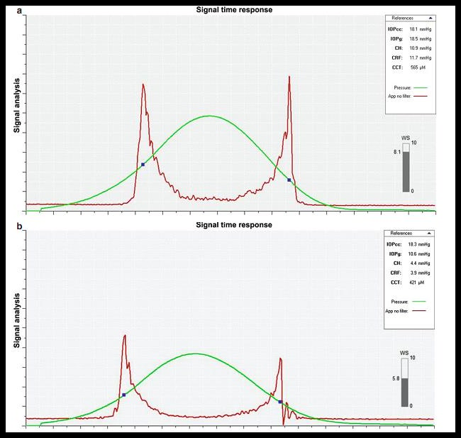
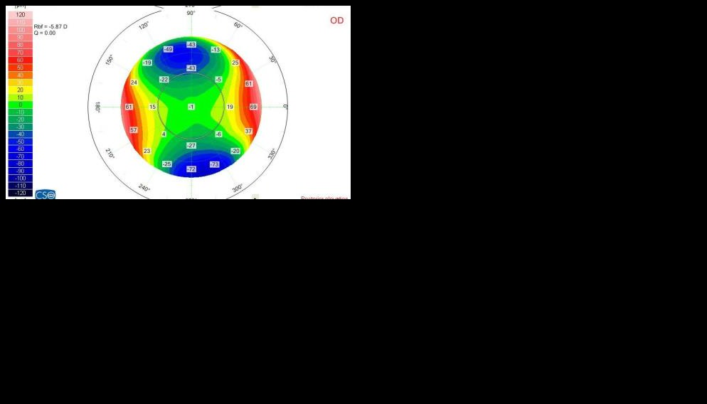
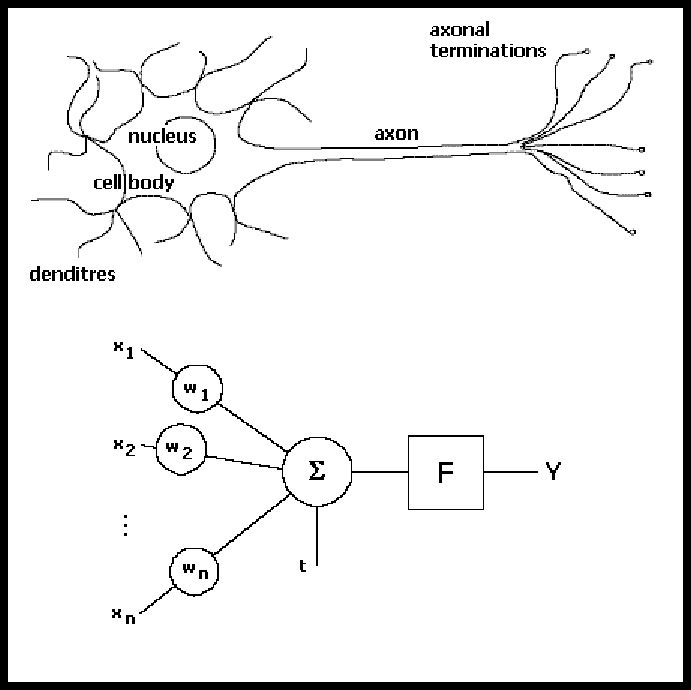
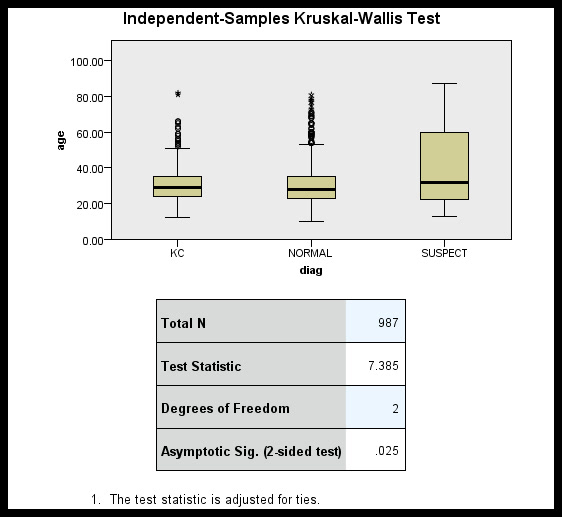
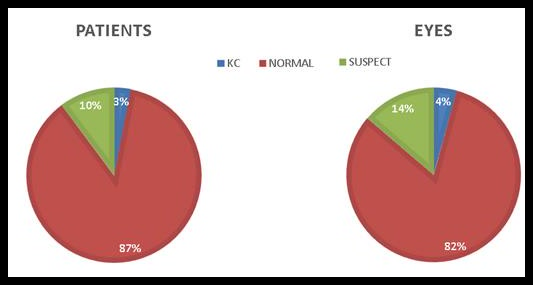
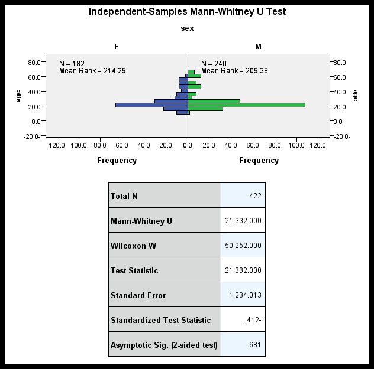
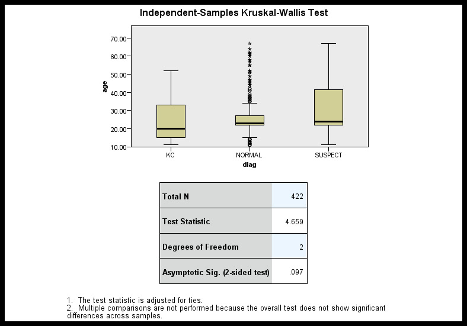

النص العربي الأصلي · الصفحات 1–21
المواد الأولية والفهرس
الجمهورية العربية السورية جامعة دمشق كلية الطب البشري قسم أمراض العين وجراحتها
استخدام تقنية رؤية الحاسب وخوارزميات التعلم العميق للتمييز بين الصور الطبوغرافية للقرنيات الطبيعية والمخروطية والمشتبه بها
رسالة مقدمة لنيل درجة الدكتوراه في أمراض العين وجراحتها
إعداد الباحث
الدكتور محمد ظفر هللا عسكر
المشرف :األستاذة الدكتورة يسرى حده
قسم أمراض العين وجراحتها -كلية الطب البشري – جامعة دمشق
المشرف المشارك :الدكتور المهندس مدحت الصوص
قسم الذكاء الصنعي – كلية الهندسة المعلوماتية – جامعة دمشق
العام الدراسي 2021-2020
الصفحة 2صفحة قرار لجنة الحكم Approval Page
2
الصفحة 3اإلهداء
3
الصفحة 4Acknowledgment Page الشكر والتقدير
4
الصفحة 5أبحاثنا المنشورة المرتبطة بموضوع البحثOur published papers related : to research قام الباحث واألستاذة المشرفة والمشرف المشارك بنشر ثالث أبحاث متعلقة بموضوع البحث في مجلة جامعة دمشق للعلوم الطبية :2020
•الكشف عن القرنية المخروطية باستخدام خوارزمية. (Askar, 2020a) SVM •انتشار القرنية المخروطية المجهضة). (Askar, 2020b •دراسة انتشار القرنية المخروطية والقرنية المخروطية المشتبه بها لدى مرضى قسم أمراض العين وجراحتها في مشفى المواساة الجامعي). (Askar, 2020c
كما شارك الباحث واألستاذة المشرفة بنشر بحث خارجي في مجلة Journal of Ophthalmic ) and Vision Research (JOVRبعنوان:
• Accelerated versus standard corneal cross-linking for progressive keratoconus in Syria باالشتراك مع كل من د عبد الرحمن سلمان واألستاذ الدكتور تيم درويش (جامعة تشرين) واألستاذة الدكتورة رافية شعبان (جامعة طرطوس) .والبحث في المراحل النهائية قبل النشر.
5
الصفحة 6 الصفحة 12قائمة الجداولList of Tables :
جدول 1تصنيف كروميش للقرنية المخروطية)43 .. (Naderan, Jahanrad, & Balali, 2017 جدول 2القيم الحدية العظمى على خريطة االرتفاعات مع جسم مرجعي كروي 62 .................. جدول 3القيم الحدية العظمى على خريطة االرتفاعات مع جسم مرجعي ملتوي اهليلجي 62 .......... جدول 4مقارنة بين الدراسات السابقة(عدا شبكات 95 ...................................... )CNN جدول 5مقارنة بين الدراسات السابقة (شبكات 96 .......................................... )CNN جدول 6توزع مجموعة التدريب حسب الجنس والتشخيص واختبار 101 ............ Chi-Square جدول 7توزع مجموعة التدريب حسب العمر 102 ................................................. جدول 8اختبار التوزع الطبيعي ألعمار مجموعة التدريب 102 ..................................... جدول 9توزع متغير العمر حسب الجنس في مجموعة التدريب 102 ............................... جدول 10توزع متغير العمر حسب التشخيص في مجموعة التدريب104 ........................... جدول 11توزع مجموعة االختبار حسب الجنس والتشخيص واختبار 106 .......... Chi-Square جدول 12توزع مجموعة االختبار حسب العمر 106 ............................................... جدول 13اختبار التوزع الطبيعي ألعمار مجموعة االختبار 107 ................................... جدول 14توزع متغير العمر حسب الجنس في مجموعة االختبار 107 ............................. جدول 15توزع متغير العمر حسب التشخيص في مجموعة االختبار 109 .......................... جدول 16قيم مشعرات الدقة الخاصة بمجموعة التدريب(خريطة التحدبات السهمية األمامية) 116 ... جدول 17قيم مشعرات الدقة الخاصة بمجموعة التحقق(خريطة التحدبات السهمية األمامية) 116 .... جدول 18قيم مشعرات الدقة الخاصة بمجموعة االختبار(خريطة التحدبات السهمية األمامية) 117 ... جدول 19قيم مشعرات الدقة الخاصة بمجموعة التدريب(خريطة التحدبات السهمية الخلفية( 118 .... جدول 20قيم مشعرات الدقة الخاصة بمجموعة التحقق(خريطة التحدبات السهمية الخلفية( 119 ..... جدول 21قيم مشعرات الدقة الخاصة بمجموعة االختبار(خريطة التحدبات السهمية الخلفية(120 .... جدول 22قيم مشعرات الدقة الخاصة بمجموعة التدريب(خارطة التحدبات المماسية األمامية) 121 ... جدول 23قيم مشعرات الدقة الخاصة بمجموعة التحقق(خارطة التحدبات المماسية األمامية) 122 ... جدول 24قيم مشعرات الدقة الخاصة بمجموعة االختبار (خارطة التحدبات المماسية األمامية) 123 . جدول 25قيم مشعرات الدقة الخاصة بمجموعة التدريب(خارطة التحدبات المماسية الخلفية)124 ....
12
الصفحة 13جدول 26قيم مشعرات الدقة الخاصة بمجموعة التحقق(خارطة التحدبات المماسية الخلفية) 125 .... جدول 27قيم مشعرات الدقة الخاصة بمجموعة االختبار(خارطة التحدبات المماسية الخلفية) 126 ... جدول 28قيم مشعرات الدقة الخاصة بمجموعة التدريب(خارطة الثخانة) 127 ...................... جدول 29قيم مشعرات الدقة الخاصة بمجموعة التحقق(خارطة الثخانة) 128 ....................... جدول 30قيم مشعرات الدقة الخاصة بمجموعة االختبار (خارطة الثخانة) 129 ..................... جدول 31قيم مشعرات الدقة الخاصة بمجموعة التدريب(خارطة االرتفاعات األمامية) 130 .......... جدول 32قيم مشعرات الدقة الخاصة بمجموعة التحقق(خارطة االرتفاعات األمامية) 131 ........... جدول 33قيم مشعرات الدقة الخاصة بمجموعة االختبار التحقق(خارطة االرتفاعات األمامية) 132 .. جدول 34قيم مشعرات الدقة الخاصة بمجموعة التدريب(خارطة االرتفاعات الخلفية) 133 ........... جدول 35قيم مشعرات الدقة الخاصة بمجموعة التحقق(خارطة االرتفاعات الخلفية) 134 ............ جدول 36قيم مشعرات الدقة الخاصة بمجموعة االختبار(خارطة االرتفاعات الخلفية) 135 .......... جدول 37قيم مشعرات الدقة الخاصة بمجموعة التدريب(خارطة القوة االنكسارية األمامية) 136 ...... جدول 38قيم مشعرات الدقة الخاصة بمجموعة التحقق(خارطة القوة االنكسارية األمامية) 137 ...... جدول 39قيم مشعرات الدقة الخاصة بمجموعة االختبار(خارطة القوة االنكسارية األمامية) 138 ..... جدول 40قيم مشعرات الدقة الخاصة بمجموعة التدريب (خارطة القوة االنكسارية الخلفية)139 ...... جدول 41قيم مشعرات الدقة الخاصة بمجموعة التحقق (خارطة القوة االنكسارية الخلفية) 140 ...... جدول 42قيم مشعرات الدقة الخاصة بمجموعة االختبار(خارطة القوة االنكسارية الخلفية) 141 ...... جدول 43قيم مشعرات الدقة الخاصة بمجموعة التدريب(خارطة القوة االنكسارية المكافئة) 142 ...... جدول 44قيم مشعرات الدقة الخاصة بمجموعة التحقق(خارطة القوة االنكسارية المكافئة) 143 ....... جدول 45قيم مشعرات الدقة الخاصة بمجموعة االختبار(خارطة القوة االنكسارية المكافئة) 144 ..... جدول 46قيم مشعرات الدقة الخاصة بمجموعة التدريب (نظام الذكاء الصنعي) 145 ............... جدول 47قيم مشعرات الدقة الخاصة بمجموعة التحقق (نظام الذكاء الصنعي) 146 ................ جدول 48قيم مشعرات الدقة الخاصة بمجموعة االختبار(نظام الذكاء الصنعي) 147 ................ جدول 49قيم مشعرات الدقة الخاصة بمجموعة االختبار(148 .......................... )SIRIUS جدول 50قيم مشعرات الدقة الخاصة بمجموعة االختبار(الطبيب دون مساعدة نظام الذكاء الصنعي) 149 ............................................................................................
13
الصفحة 14جدول 51قيم مشعرات الدقة الخاصة بمجموعة االختبار(الطبيب مع مساعدة نظام الذكاء الصنعي) 150 ............................................................................................ جدول 52قيم مشعرات الدقة الخاصة بمجموعة االختبار(الطبيب مع مساعدة جهاز 151 )SIRIUS جدول 53جدول يلخص اختبارات 152 .............................................. McNemar جدول 54ملخص مشعرات الدقة الخاصة بالشبكات العصبونية للكشف عن حاالت القرنية المخروطية 161 ............................................................................................ جدول 55ملخص مشعرات الدقة الخاصة بالشبكات العصبونية للكشف عن حاالت القرنية الطبيعية 163 ............................................................................................ جدول 56ملخص مشعرات الدقة الخاصة بالشبكات العصبونية للكشف عن حاالت القرنية المشتبه بها 164 .......................................................................................... جدول 57ملخص نتائج الشبكات العصبونية ونظام الذكاء الصنعي 165 ........................... جدول 58ملخص نتائج جميع النماذج 166 .......................................................
14
الصفحة 15قائمة األشكال والرسوم البيانيةList of Figures :
{kind=link}

{kind=link}

{kind=link}

األسفل(33 ....................................................... )Mazen M Sinjab, 2011b شكل 4التنكس الهامشي الشفاف)35 ............................. (Mazen M Sinjab, 2011a شكل 5ضخامة القرنية(36 ....................................... )Mazen M Sinjab, 2011a شكل 6حثل تيرينس الهامشي(37 ................................. )Mazen M Sinjab, 2011a شكل 41 ...................................................... )Mazen M Sinjab, 2011a(7 شكل 8قرص بالسيدو 44 ........................................................................ شكل 9المنظار الضوئي للتحدب القرني 45 ....................................................... شكل 10نموذج لصورة مأخوذة باألوربيسكان تظهر المشعرات والخرائط األساسية 46 ................ شكل 11نموذج لصورة طبوغرافيا مأخوذة بالبنتاكام تظهر المشعرات والخرائط األساسية()OCULUS 47 .............................................................................................. شكل 12نموذج لصورة مأخوذة بالسايروس تظهر المشعرات والخرائط األساسية(48 . )CSO, 2018 شكل 13نموذج لصورة مأخوذة بال MS 39تظهر المشعرات والخرائط األساسية)49 ...... (CSO شكل 14نموذج لخارطة ثخانة في قرنية طبيعية 50 ............................................... شكل 15خارطة تحدبات تماسيه في قرنية طبيعية 51 .............................................. شكل 16كيفية حساب قيم التحدبات Aخريطة تماسية Bخريطة سهمية 51 ........................ شكل 17نموذج لخارطة تحدبات سهمية في قرنية طبيعية 52 ...................................... شكل 18نموذج لخارطة ارتفاعات في قرنية طبيعية 53 ............................................ شكل 19نموذج لخارطة القوة االنكسارية في قرنية طبيعية 54 ...................................... شكل 20نموذج لخارطة الغرفة األمامية في قرنية طبيعية 55 ...................................... شكل 21تحليل زرنيكه 56 ........................................................................ شكل 22بعض المشعرات التي يعتمد عليها جهاز SIRIUSلتصنيف القرنية 59 ................... شكل 23بعض األشكال الطبوغرافية لخارطة التحدبات السهمية في القرنية المخروطية 61 ...........
15
الصفحة 16{kind=link}

{kind=link}

70 ....................................................................................... )2015 شكل 26يظهر نموذج لشبكة عصبونية صنعية مؤلفة من ثالث طبقات( Sarno & Wijaya, 71 ....................................................................................... )2019 شكل 27شكل يوضح عملية التدريب(72 ................................ )Negnevitsky, 2005 شكل 28يظهر سير عملية التدريب وكيفية تغير دقة النتائج بين مجموعة التدريب والتحقق(72 ............................................................ )Zimmermann, 2017 شكل 29شكل ترسيمي للعالقة بين الذكاء الصنعي وتعلم اآللة والتعلم العميق (Oppermann, )74 ....................................................................................... 2019 شكل 30شبكة صنعية متعددة الطبقات تمثل نموذجا لشبكات التعلم العميق (Oppermann, )75 ....................................................................................... 2019 شكل 31الفرق بين تعلم اآللة والتعلم العميق)75 ......................... (Oppermann, 2019 شكل 32كيفية عمل الفلتر 76 ............................................... (Jeong, 2019). شكل 33خريطة المالمح الناتجة عن أحد الفالتر77 .......................... (Jeong, 2019). شكل 34كيفية عمل طبقة التجميع77 ........................................ (Jeong, 2019). شكل 35كيفية عمل طبقة التسطيح واتصالها بالطبقات التالية وصوالً لطبقة الخرج(Jeong, . )78 ....................................................................................... 2019 شكل 36عدد الدراسات المنشورة في موقع Pubmedفي كل عام 83 ............................. شكل 37عدد الدراسات المنشورة في موقع Pubmedفي كل عام 86 ............................. شكل 38عدد المنشورات في موقع Pubmedبحسب المرض (إحصائية بين عامي )2018-2007 87 .............................................................................................. شكل 39مخطط ROCمقارة بمجموعة من األطباء(النقط الملونة) 88 .............................. شكل 92 .................................................... )Oculus, 2021(CBI & TBI 40 شكل 41خريطة المالمح التمييزية في المنتصف و والخريطة الحرارية في أيمن الصورة 94 ......... شكل 42توزع مجموعة التدريب حسب التشخيص 100 ............................................. شكل 43اختبار Mann-Whitneyلتوزع متغير العمر حسب الجنس في مجموعة التدريب 103 ... 16
الصفحة 17{kind=link}

{kind=link}

{kind=link}

{kind=link}



116 ............................................................................................ شكل 50مصفوفة االلتباس الخاصة بمجموعة االختبار(خريطة التحدبات السهمية األمامية) 117 .... شكل 51مصفوفة االلتباس الخاصة بمجموعة التدريب(خريطة التحدبات السهمية الخلفية( 118 ..... شكل 52مصفوفة االلتباس الخاصة بمجموعة التحقق(خريطة التحدبات السهمية الخلفية( 119 ...... شكل 53مصفوفة االلتباس الخاصة بمجموعة االختبار(خريطة التحدبات السهمية الخلفية( 120 ..... شكل 54مصفوفة االلتباس الخاصة بمجموعة التدريب(خارطة التحدبات المماسية األمامية) 121 .... شكل 55مصفوفة االلتباس الخاصة بمجموعة التحقق(خارطة التحدبات المماسية األمامية)122 ..... شكل 56مصفوفة االلتباس الخاصة بمجموعة االختبار (خارطة التحدبات المماسية األمامية) 123 .. شكل 57مصفوفة االلتباس الخاصة بمجموعة التدريب(خارطة التحدبات المماسية الخلفية) 124 ..... شكل 58مصفوفة االلتباس الخاصة بمجموعة التحقق(خارطة التحدبات المماسية الخلفية) 125 ..... شكل 59مصفوفة االلتباس الخاصة بمجموعة االختبار(خارطة التحدبات المماسية الخلفية) 126 .... شكل 60مصفوفة االلتباس الخاصة بمجموعة التدريب(خارطة الثخانة)127 ........................ شكل 61مصفوفة االلتباس الخاصة بمجموعة التحقق(خارطة الثخانة) 128 ........................ شكل 62مصفوفة االلتباس الخاصة بمجموعة االختبار (خارطة الثخانة) 129 ...................... شكل 63مصفوفة االلتباس الخاصة بمجموعة التدريب(خارطة االرتفاعات األمامية) 130 ........... شكل 64مصفوفة االلتباس الخاصة بمجموعة التحقق(خارطة االرتفاعات األمامية) 131 ............ شكل 65مصفوفة االلتباس الخاصة بمجموعة االختبار التحقق(خارطة االرتفاعات األمامية) 132 ... شكل 66مصفوفة االلتباس الخاصة بمجموعة التدريب(خارطة االرتفاعات الخلفية) 133 ............ شكل 67مصفوفة االلتباس الخاصة بمجموعة التحقق(خارطة االرتفاعات الخلفية) 134 ............. شكل 68مصفوفة االلتباس الخاصة بمجموعة االختبار(خارطة االرتفاعات الخلفية) 135 ........... شكل 69مصفوفة االلتباس الخاصة بمجموعة التدريب(خارطة القوة االنكسارية األمامية) 136 ....... 17
الصفحة 18


149 ............................................................................................ شكل 83مصفوفة االلتباس الخاصة بمجموعة االختبار(الطبيب مع مساعدة نظام الذكاء الصنعي) 150 ............................................................................................ شكل 84مصفوفة االلتباس الخاصة بمجموعة االختبار(الطبيب مع مساعدة جهاز 151 . )SIRIUS شكل 85مصفوفة االلتباس الثنائية (نتائج نظام الذكاء الصنعي مقابل نتائج جهاز 153 . )SIRIUS شكل 86مصفوفة االلتباس الثنائية (نتائج نظام الذكاء الصنعي مقابل نتائج الطبيب بدون مساعدة) 153 ............................................................................................ شكل 87مصفوفة االلتباس الثنائية (نتائج نظام الذكاء الصنعي مقابل نتائج الطبيب مع مساعدة الذكاء الصنعي) 154 ............................................................................. شكل 88مصفوفة االلتباس الثنائية (نتائج نظام الذكاء الصنعي مقابل نتائج الطبيب مع مساعدة 154 ................................................................................... SIRIUS شكل 89مصفوفة االلتباس الثنائية (نتائج جهاز SIRIUSمقابل نتائج الطبيب بدون مساعدة) 155 شكل 90مصفوفة االلتباس الثنائية (نتائج جهاز SIRIUSمقابل نتائج الطبيب مع مساعدة نظام الذكاء الصنعي) 155 ............................................................................. 18
الصفحة 19
156 .................................................................................. )SIRIUS شكل 92مصفوفة االلتباس الثنائية (نتائج الطبيب دون مساعدة مقابل نتائج الطبيب مع مساعدة نظام الذكاء الصنعي)156 ........................................................................ شكل 93مصفوفة االلتباس الثنائية (نتائج الطبيب دون مساعدة مقابل نتائج الطبيب مع مساعدة جهاز 157 ............................................................................ )SIRIUS شكل 94مصفوفة االلتباس الثنائية (نتائج الطبيب مع مساعدة نظام الذكاء الصنعي مقابل نتائج الطبيب مع مساعدة جهاز 157 ........................................................ )SIRIUS شكل 95الخرائط الحرارية لشبكة التحدبات السهمية االمامية 167 .................................. شكل 96الخرائط الحرارية لشبكة التحدبات السهمية الخلفية 168 ................................... شكل 97الخرائط الحرارية لشبكة التحدبات المماسية االمامية 168 ................................. شكل 98الخرائط الحرارية لشبكة التحدبات المماسية الخلفية 169 .................................. شكل 99الخرائط الحرارية لشبكة االرتفاعات االمامية 169 ......................................... شكل 100الخرائط الحرارية لشبكة االرتفاعات الخلفية 170 ........................................ شكل 101الخرائط الحرارية لشبكة الثخانة 170 .................................................... شكل 102الخرائط الحرارية لشبكة القوة االنكسارية المكافئة 171 ................................... شكل 103الخرائط الحرارية لشبكة القوة االنكسارية األمامية 172 ................................... شكل 104الخرائط الحرارية لشبكة القوة االنكسارية الخلفية 172 .................................... شكل 105الحالة األولى 174 .................................................................... شكل 106الحالة الثانية 175 .................................................................... شكل 107الحالة الثالثة 176 .................................................................... شكل 108الحالة الرابعة 178 .................................................................... شكل 109الحالة الخامسة 179 ................................................................. شكل 110الحالة السادسة 180 ................................................................. شكل 111الحالة السابعة 182 .................................................................. شكل 112الحالة الثامنة 183 ................................................................... شكل 113الحالة التاسعة 184 .................................................................. 19
الصفحة 20
20
الصفحة 21الملخصAbstract :
المقدمة :تعد القرنية المخروطية من األمراض الشائعة ويمتلك الكشف الباكر عنها أهمية كبيرة ويتم ذلك من خالل قراءة الصور الطبوغرافية بدقة وعناية للتمييز بين القرنيات المخروطية والمشتبه بها والطبيعية. تعددت الدراسات التي حاولت اكتشاف معايير ومؤشرات تساعد في الكشف الباكر مع قيم متفاوتة لمشعرات الدقة .لكن أغلب الدراسات السابقة كان يعتمد على قسم ضئيل من معلومات الصور الطبوغرافية .بعد القفزة النوعية في علوم الحاسب وخاصة مجال الذكاء الصنعي والشبكات العصبونية الصنعية وظهور تطبيقات طبية قادرة على قراءة وتحليل الصور الطبية آلياً ،كان البد من دراسة إمكانية استخدام تقنيات الذكاء الصنعي للكشف عن القرنيات المخروطية والمشتبه بها.
هدف البحث :دراسة كفاءة استخدام خوارزمية الرؤية الحاسوبية وخوارزميات التعلم العميق للتمييز بين صور خرائط الطبوغرافيا للقرنيات الطبيعية والمخروطية والمشتبه بها.
المواد والطرائق :تتكون دراستنا من قسمين ،القسم األول هو دراسة تراجعية لسجالت وصور المرضى لجمع عينة التدريب والتي تتكون من 987عين ( 300مخروطية 610 ،طبيعية 77 ،مشتبه بها) .أما القسم الثاني فهو دراسة مقطع مستعرض لجمع عينة االختبار والتي تتكون من 422عين (13 مخروطية 366 ،طبيعية 43 ،مشتبه بها) .يتكون نظام الذكاء الصنعي الذي اقترحناه من عشر شبكات عصبونية صنعية كل شبكة مسؤولة عن قراءة إحدى الخرائط (التحدبات المماسية األمامية والخلفية، والسهمية األمامية والخلفية ،االرتفاعات األمامية والخلفية ،القوة االنكسارية األمامية والخلفية والمكافئة، الثخانة) والتنبؤ بكون الخريطة تعود أحد األصناف الثالثة ومخرجاتها تشكل مدخالت لشبكة عصبونية صنعية مسؤولة عن القرار النهائي للنظام.
النتائج :حقق نظام الذكاء الصنعي المقترح من قبلنا دقة وقيم Weighted F-scoreإجمالية على مجموعة االختبار) )%91.2-%92.2وال يوجد فرق هام إحصائياً بينه وبين كل من البرنامج الملحق بجهاز SIRIUSوالطبيب ( .)p>5%حقق الطبيب مع مساعدة نظام الذكاء الصنعي أفضل نتيجة ( )%95.9-%96.2مقارنة بكل النماذج األخرى وكان هناك فرق هام إحصائياً (.)P<5%
االستنتاجات :نوصي باعتماد نظام الذكاء الصنعي كأداة مساعدة للطبيب في قراءة الخرائط الطبوغرافية.
الكلمات المفتاحية :القرنية المخروطية ،الذكاء الصنعي ،التعلم العميق ،الشبكات العصبونية
21